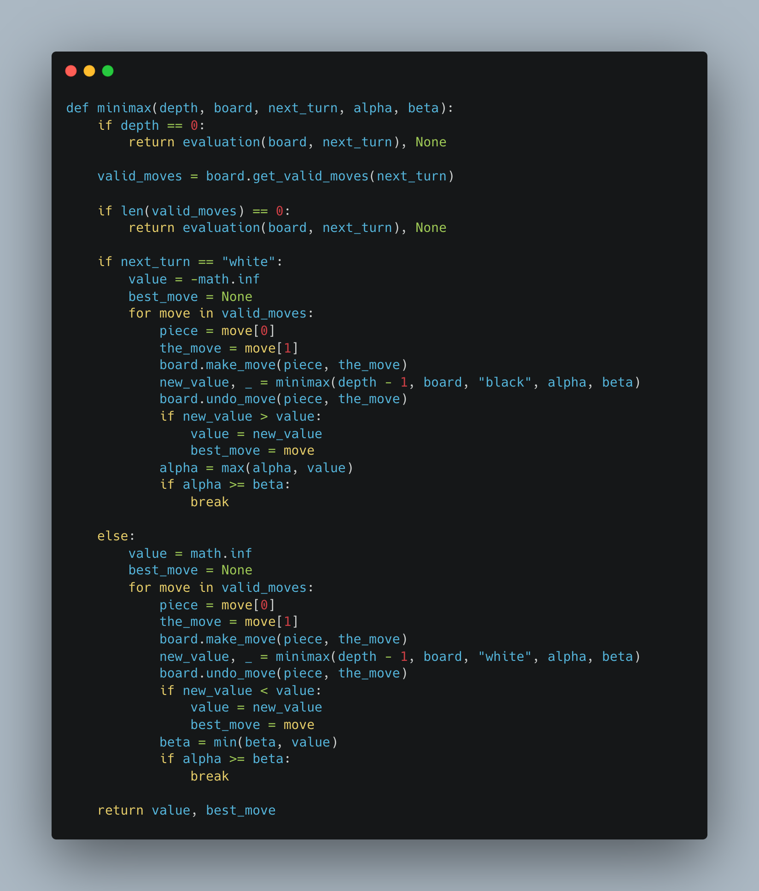

Making Chess Bots: MINIMAX, SARSA, AND Q-Learning
As I am sure most of you are aware, chess is a two-player strategy board game that humans have been playing for quite a long time. I've always been interested in the game, although from a theoretical perspective rather than playing it, and recently I've become quite curious about artificial intelligence models as well. Unsurprisingly, this gave rise to an interest in chess bots and I commenced a journey with a goal of generating intelligent bots that could play chess to at least a somewhat competitive degree. With this objective in mind I developed a chess game platform featuring three distinct chess bots, each utilizing a different algorithm: SARSA (State-Action-Reward-State-Action), Q-learning, and Minimax (with alpha-beta pruning).
The SARSA and Q-learning bots were designed using reinforcement learning principles, where they learn optimal strategies through interaction with the game environment. The SARSA bot updates its policy based on the action taken, while the Q-learning bot focuses on maximizing future rewards regardless of the current action. The Minimax bot, enhanced with alpha-beta pruning, employs a classic game theory approach, systematically evaluating possible moves to minimize potential losses and maximize gains, while efficiently cutting off branches of the search tree that do not need to be explored.
To make this project accessible and interactive, I created a user-friendly digital interface using pygame, a free, open-source Python library that allows users to create multimedia applications. This interface allows users to play against any of the three chess bots, providing a hands-on experience with AI-driven opponents. Feel free to download and play around with the code/game through my GitHub.
The Minimax Algorithm with alpha-beta pruning
The minimax algorithm is a recursive adversarial search algorithm. The algorithm features two players, the maximizing player, and the minimizing player. The goal of the maximizer player is to get to the highest score possible, whilst the minimizer player aims to minimize the score as much as possible. Every state thus has an associated value which is provided by an evaluation function and the algorithm makes use of these values to decide how the players can maximize or minimize their score in order to perform best. Both players play alternatively and assume that the other player is playing in an optimal fashion, where optimal play can be understood as the minimizer choosing a move that minimizes the score returned by the evaluation function and the maximizer choosing a move that maximizes the score returned by the evaluation function.
The algorithm makes use of a depth first search approach to find the minimizing or maximizing move and also makes use of recursion. The algorithm takes in a parameter for depth and will traverse the game tree till that given depth or until it reaches a terminal node, after this it goes back up the tree comparing values with one another and returns the minimum or maximum value depending on the player who is playing.
The minimax algorithm can be optimized by making use of alpha-beta pruning. This pruning process involves the pruning of the branches of the game tree that are not going to affect the choice of the minimizing or maximizing move. This improves the time complexity of the algorithm as it makes the choice of the maximum/minimum move faster. The way in which this works is that two values alpha and beta are initialized to negative infinity and infinity respectively.

My implementation of the MINIMAX approach (with Alpha-Beta Pruning)
The alpha value is then updated by the max player and is the greatest value found in the game tree till that point, conversely the beta value is updated by the min player and is the lowest value found in the game tree till that point. With a pruning condition of alpha >= Beta. As mentioned earlier and as also indicated by the pseudo code and implementation the minmax and alpha beta algorithm depend on an evaluation function to generate scores for each state. This begs the question: what is an evaluation function?
The Evaluation Function
An Evaluation function is a heuristic function that is used to establish the value of a particular state. So, for a chess game, the evaluation function would take in the board as an input, together with a player and then return a value based on certain traits such as the number or positions of pieces and enemy pieces. These values can then be made use of by the alpha beta code to generate a minimizing or maximizing move. The evaluation function I used for my chess game was predominantly based on the values of pieces and enemy pieces, for each player scores were based on the player’s pieces subtracted with the enemy player’s pieces these values were then increased or decreased based on position matrixes, thereby encouraging pieces to move into positions that would be beneficial for them. For example, for a knight, which has a lot more options when in the center of the board in comparison to the sides, a matrix which provides a greater value return for a knight in the center of the board leads to a more accurate evaluation of the board state. This is what I implemented for every piece based on its characteristics. Initial values for the pieces were based on suggestions by the chess wiki page and the values were as follows: Pawn 1.0, Knight 3.2, Bishop 3.3, Rook 5.0, Queen 9.0, King 200. The values were considered as negatives for the black pieces. The implementation of my evaluation function is shown below:
SARSA and Q-Learning Algorithms
The SARSA algorithm is a reinforcement learning algorithm that is used to solve Markov decision processes (MDPs). It stands for "State-Action-Reward-State-Action" and is an on-policy algorithm, meaning it learns the optimal policy by directly estimating the action-value function for the current policy being followed. The SARSA algorithm follows an iterative process of interacting with the environment, updating the action-value function based on observed rewards and estimated future rewards, and gradually improving the policy. By repeatedly exploring the state-action space and updating the action-values, SARSA aims to find the optimal policy that maximizes the cumulative rewards over time. I implemented this algorithm for the second intelligent player and a variation of SARSA, namely Q-Learning which is simply SARSA but off policy (Q-Learning takes the greedy action, which is an action that gives the maximum Q-value for the state). My implementation for SARSA and Q-Learning is shown below (the feature vector for the algorithms was based on the same factors as my evaluation function).